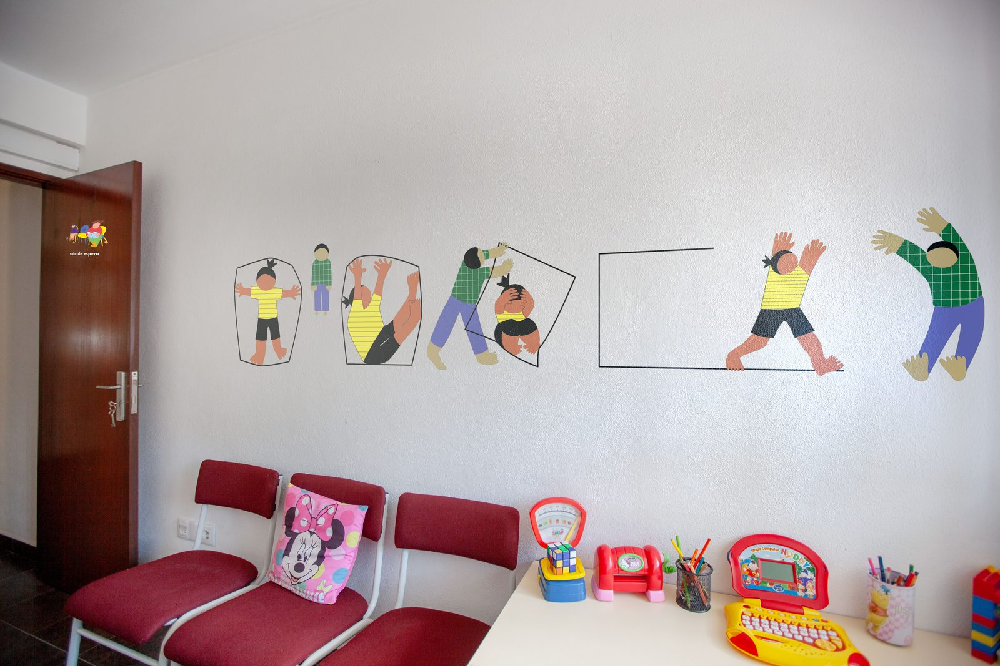
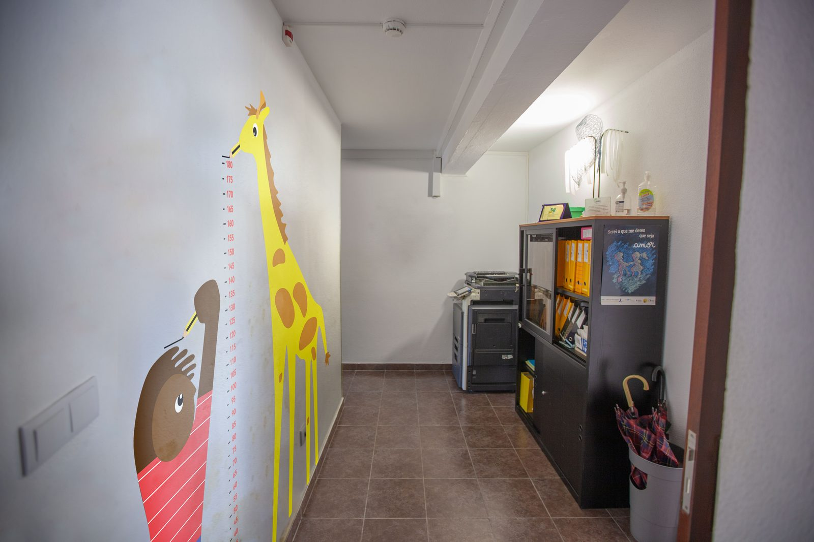
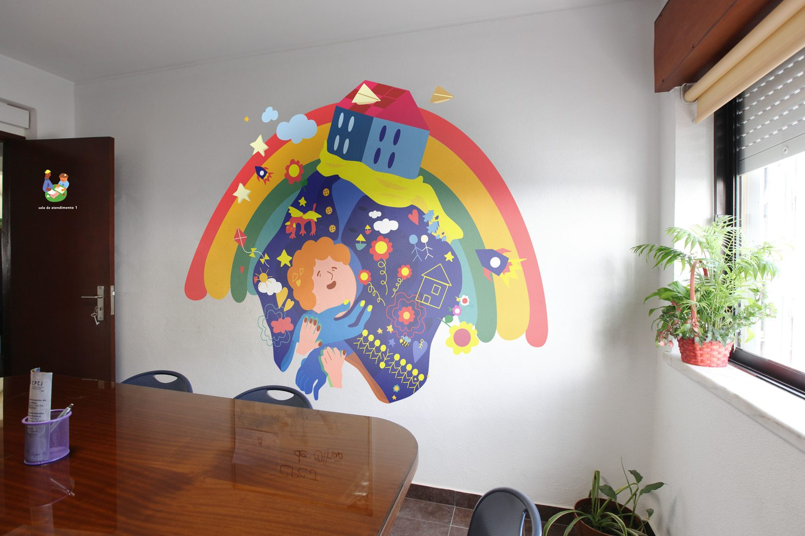
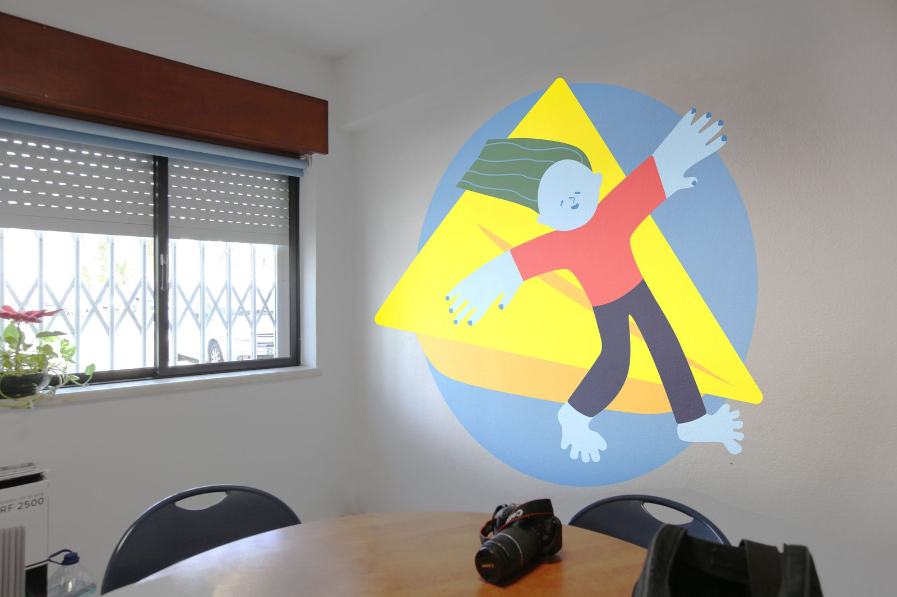

Projetos / Lugar Seguro
Projetos / Lugar Seguro
Projetos / Lugar Seguro
Projetos / Lugar Seguro

Queremos levar cores a quem mais precisa
Há espaços que precisam de mais do que funcionalidade. Em contextos de saúde e atendimento social, o ambiente físico comunica antes de qualquer palavra — define o tom, a receptividade, a confiança.
O Lugar Seguro nasce desta convicção: que a cor, aplicada com intenção e rigor, pode transformar a forma como as pessoas habitam e experienciam um espaço. Não de forma sugestiva, mas reflexiva e expressiva — criando uma relação mais profunda entre o espaço e quem o usa.

Primeiro contacto com o espaço. A cor cria um ambiente de acolhimento que reduz a ansiedade e comunica cuidado antes de qualquer interação.

Elemento de transição e continuidade narrativa entre os diferentes espaços do edifício.

Ambiente que promove a confiança e a abertura no momento do atendimento.
Variação da mesma linguagem visual, adaptada à especificidade da sala e do seu uso.

Espaço de trabalho com intervenção que favorece o foco e o bem-estar da equipa.
Complementar ao anterior, fecha o ciclo cromático do edifício com coerência.
Menos saturação visual. A cor serve o espaço — não o contrário. Cada tom escolhido com atenção ao contexto e ao utilizador.
Cada sala comunica com as restantes. Os elementos visuais conectam-se e criam um percurso narrativo pelo edifício inteiro.
A personalidade do espaço cria uma relação mais profunda com quem o habita — reflexiva e expressiva, nunca prescritiva.
6 murais, cada um adaptado ao espaço e ao seu funcionamento.
Material de comunicação impresso para auxiliar a missão da CPCJ.
Sinalética personalizada para as salas de atendimento e de espera.
Identidade visual do projeto e definição da abordagem.
Levantamento e análise do espaço existente como base para todas as decisões de intervenção.
{kind=link}
{kind=link}
{kind=link}
{kind=link}